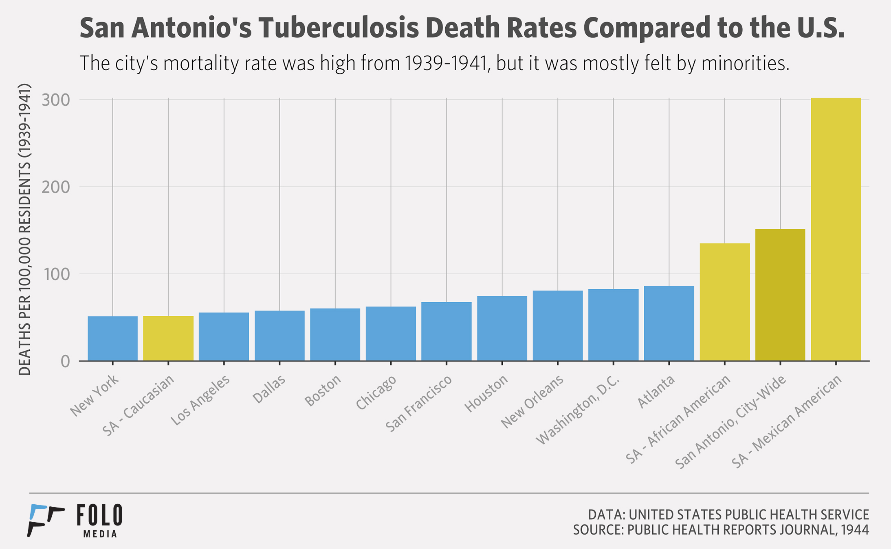
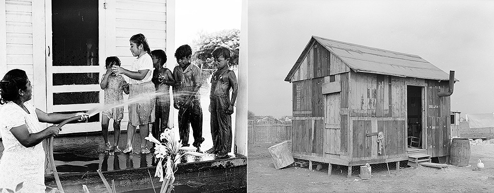
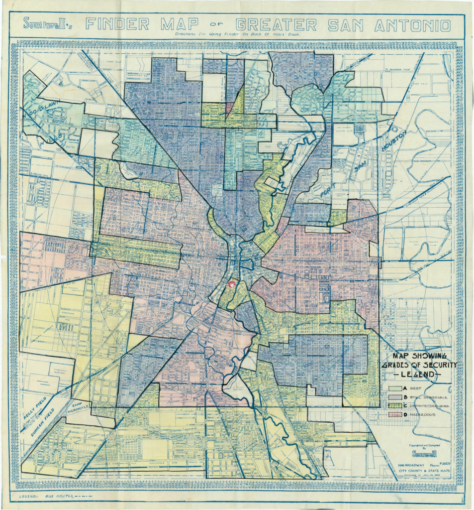
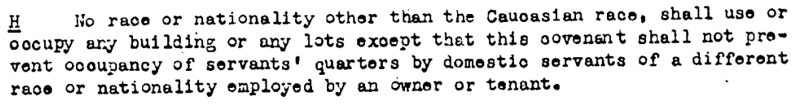
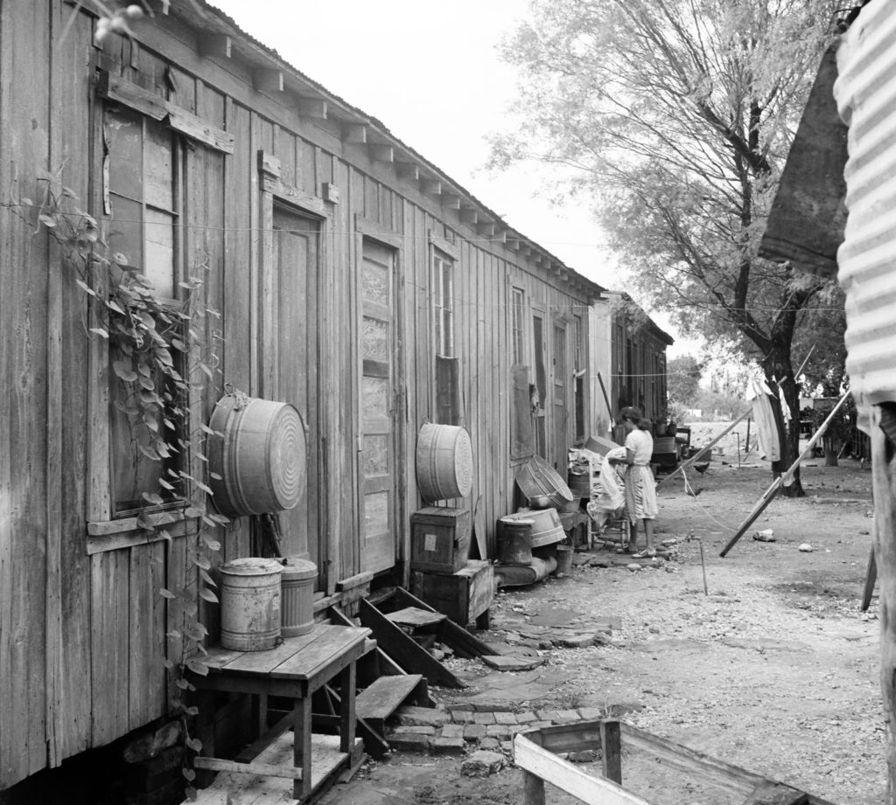

Note: This story was originally published by Folo Media.
Documents from this time period variously use the terms “Spanish-American,” “Mexican-American,” “Latin-American” and “Hispanic.” Today, many view these and similar terms as inaccurate.
This is the second installment in a series of essays on the legacy of a court battle that began in San Antonio, ended in the Supreme Court, and determined that American children have no constitutional right to an education. Read the opening essay here.
In San Antonio Independent School District v. Rodriguez, Demetrio Rodriguez’s allegation of bias based on wealth was built on decades of injustice that neither began nor ended at the schoolhouse doors.
Had the Supreme Court decided in Rodriguez’s favor, it might have raised questions about how property values came to be so unevenly distributed across San Antonio. The way communities built the “wealth” that gave them such an advantage in the Texas school finance formula was the result of some of San Antonio’s most deadly public policy decisions.
How to build a slum
In July 1945, residents of the newly-built Alazan and Apache courts received typewritten notices that read:
“Do you want to be defeated by the enemy? Do you want this enemy to sneak up and stab you in the back? Do you want this enemy to seek out your little boy or little girl, your husband, wife, or your parents and overcome them?”
Though the West Side, where Edgewood ISD is located, was home to America’s largest military training center at the start of World War II, this notice was not war propaganda. Instead, notes like these were part of an ongoing effort to combat a wide array of diseases that plagued San Antonio for much the 20th century.
Polio, diarrhea and typhoid were among the most common threats, but none was more devastating or difficult to overcome than tuberculosis. From 1939-1941, San Antonio had the highest death rate from tuberculosis among the 92 largest cities in the United States. During each of those years in San Antonio, 151.7 residents out of every 100,000 died from tuberculosis. This was nearly triple the average of all 92 large American cities during that time.

The deaths were not evenly spread across town. For every 100,000 people, the tuberculosis death rate for whites was 52 and for blacks was 152. For the Hispanic population, largely confined to the city’s West Side, the tuberculosis death rate was a staggering 302 per 100,000.
The West Side lacked critical health and sanitation infrastructure. Minutes from a 1923 city council meeting show that on two different occasions, West Side residents from the Edgewood area had requested to be recognized as an “improvement district” — which would have prioritized the area’s sewage, transportation and safety needs. Next to each request, the minutes simply read: “not granted.”
Many of the public utilities that defined modern life were lacking in the “Edgewood Addition,” as the subdivision was called, making it susceptible to the kind of public health crisis that erupted in the 1945 outbreak. With no plumbing or water, communities often shared six toilets and a single shower among 100 neighbors. To care for themselves, resourceful community members would pool their money together for a day’s rent at a hotel room in downtown San Antonio. This allowed each person to take a hot bath.
Many bought their drinking water from private vendors, or used private wells. These unregulated sources opened the community to increased risk of waterborne illness, despite precautions taken by residents.
From 1939-1941, San Antonio had the highest death rate from tuberculosis among the 92 largest cities in the United States.
Rain presented another problem. The lack of drainage systems created what some parts of the West Side call “El Barrio De Charco” or “The Neighborhood of Puddles.” The standing water also heightened the risk of disease because it was perfect for breeding mosquito colonies.
The city leadership of the time was aware of these problems. Six years before the outbreak, in 1939, Mayor Maury Maverick had chastised the City Council for its neglect as it prepared to restore La Villita into at “arts village.” At a city celebration announcing “beautiful Villita,” Maverick co-opted the moment to address the causes of the city’s tuberculosis epidemic and its disproportionate impact on the city’s West Side:
“… the tragic fact is that the Latin-American rate was six times as high as that of the Anglo-Americans. Why? It is due to improper housing, bad sanitation and lack of medical care in that portion of the city where the bulk of the Latin-American population resides.”
He asked the city’s white population to “not be smug” towards this reality, and noted the irony of preserving “Spanish-American culture” while neglecting Spanish-American people living on the city’s West Side: “A beautiful monument to Spanish culture is not half as pretty as a clinic to preserve the living Spanish-Americans, and of course all human beings.”

Locked in place
Hispanic families who earned or saved enough money to purchase homes in a different part of town had limited options of where to go next. Manuel Garza, who grew up in Edgewood and participated in the 1968 walkouts of Edgewood High School, told me everyone in the neighborhood understood that for them, the borders of the city were closer than for Anglos. “There was the northern boundary,” he said. “You couldn’t live north of Culebra.”
In 1935 and 1936, the federal government’s Home Owners Loan Corporation (HOLC) commissioned surveys of American cities that assessed mortgage risk for lenders. The surveys included “residential security” and “racial concentration” maps of all surveyed cities. Risk was tied to the presence of minorities, which made it harder to get a loan in a majority Hispanic or black area.

The “racial concentration” maps of San Antonio showed Culebra Road as a distinct boundary with “Mexicans” living south of it. Folo Media found original deed records, between 1908 and 1950, that included racially restrictive covenants, many of which weren’t slated to expire until 1970. The language either explicitly barred “Negroes,” “Mexicans,” or races “other than the Caucasian race” from any form of occupancy except “occupancy of servants’ quarters.” A 1948 Supreme Court case deemed such deed restrictions unconstitutional, but in San Antonio, the land and its people had already been organized.
Both public and private institutions played a role in restricting where non-whites in the city could live. Banks, neighborhood associations, and even the city’s government safeguarded areas like Alamo Heights, Harlandale, Los Angeles Heights, Olmos Park Estates and Terrell Heights for the benefit of San Antonio’s white residents.
For instance, in 1949, Frost National Bank participated as the grantor on a sale of 36 lots inside today’s Alamo Heights ISD boundary. In the deed of record, covenants were established “for the benefit of all future owners thereof” until Jan. 1, 1970. Section H read as follows:

Other racially restrictive home lending, sales, and rental policies continued in practice until they were outlawed by President Lyndon Johnson’s Fair Housing Act of 1968. It was not until 1977 that the Community Reinvestment Act was able to target remaining discriminatory lending practices.
Public housing complexes, commissioned by Maverick in 1940, provided a safer living situation, but concentrated government housing facilities remained segregated until an executive order by President John F. Kennedy in 1964 prevented racial discrimination in federally funded housing. And the 2,554 units of the Alazan, Apache, Lincoln, Wheatley and Victoria Courts posed another problem: They improved living conditions, but provided no additional income for schools. They also ensured that the city would continue to group its low-income and minority citizens together, preserving white middle class areas where investment and wealth would be protected.
For most of the 20th century, virtually no area of life went unsegregated in San Antonio. In a 1984 interview, former Mayor Lila Cockrell noted as much: “Because you can see, you know, when you look back and think that segregation was still a part of San Antonio as recently as of about 20 years ago.” According to several studies, it’s still part of San Antonio today.
Which brings us back to school finance. As property values grew in white areas in the late 20th century until today, they stagnated or declined in areas available to black and Hispanic families. By tying school finance to property tax, which is based on the value of the property, the Texas Legislature built an inherently inequitable system. As of 2016, the “property wealth per average daily attendance” (property wealth per student) in Alamo Heights ISD was $1,179,836. Edgewood was at $91,813.
Over the course of the 20th century, a cycle of isolation, spurred by low property values, would keep Edgewood mired in difficulty. Meanwhile, innovation and wealth spread among its neighbors. The next essay in the series on Texas school finance examines how Edgewood was excluded from consolidation, perhaps its best chance at recovery.

Acknowledgments
This article was produced during my time at Folo Media during 2017. Folo Media was a nonprofit newsroom focused on the challenges of inequity and neighborhood segregation in San Antonio, Texas. The newsroom ran from the spring of 2017 through early 2018, and during that span published more than 100 stories covering a range of issues, such as: housing, education, racial segregation, non-profit solutions, and much more.
If you are interested in following the work of those who helped lead Folo Media’s work, I encourage you to keep up with the American Journalism Project, the H.E.Butt Foundation’s Echoes Magazine, and the San Antonio Heron.